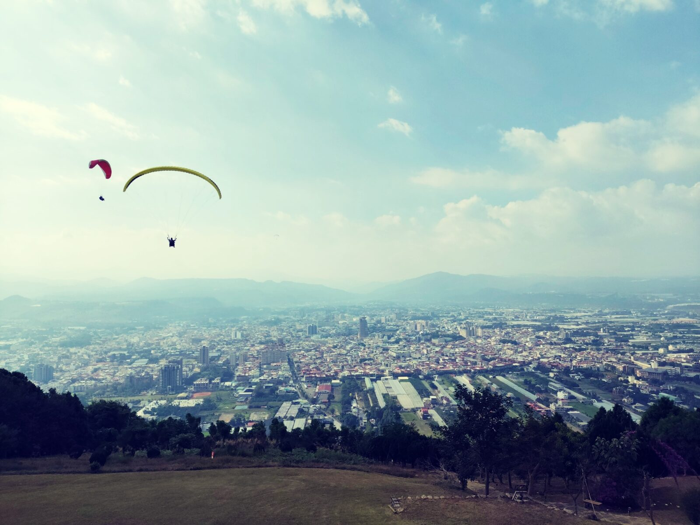
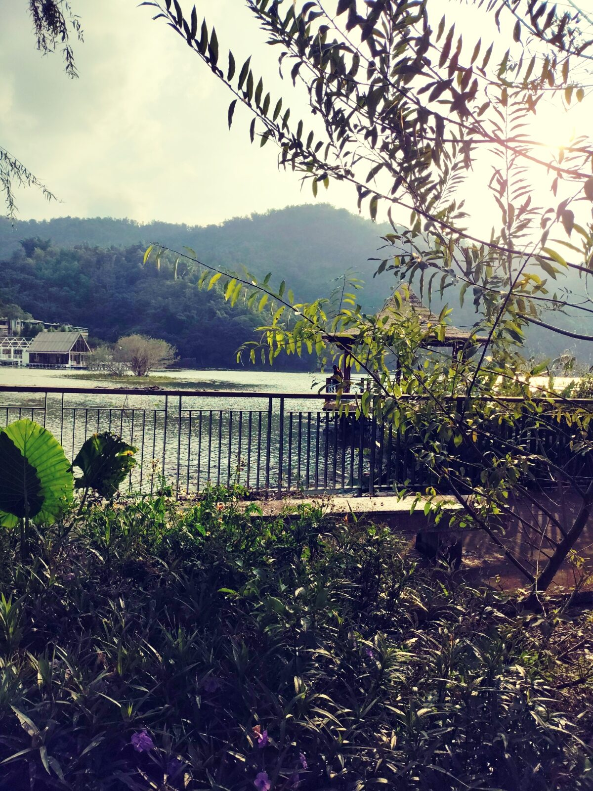
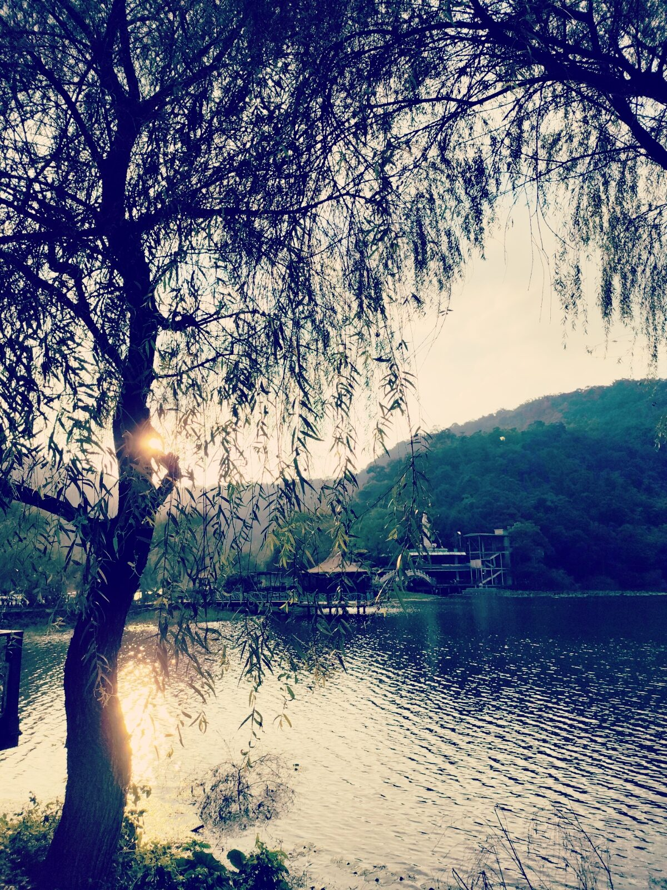
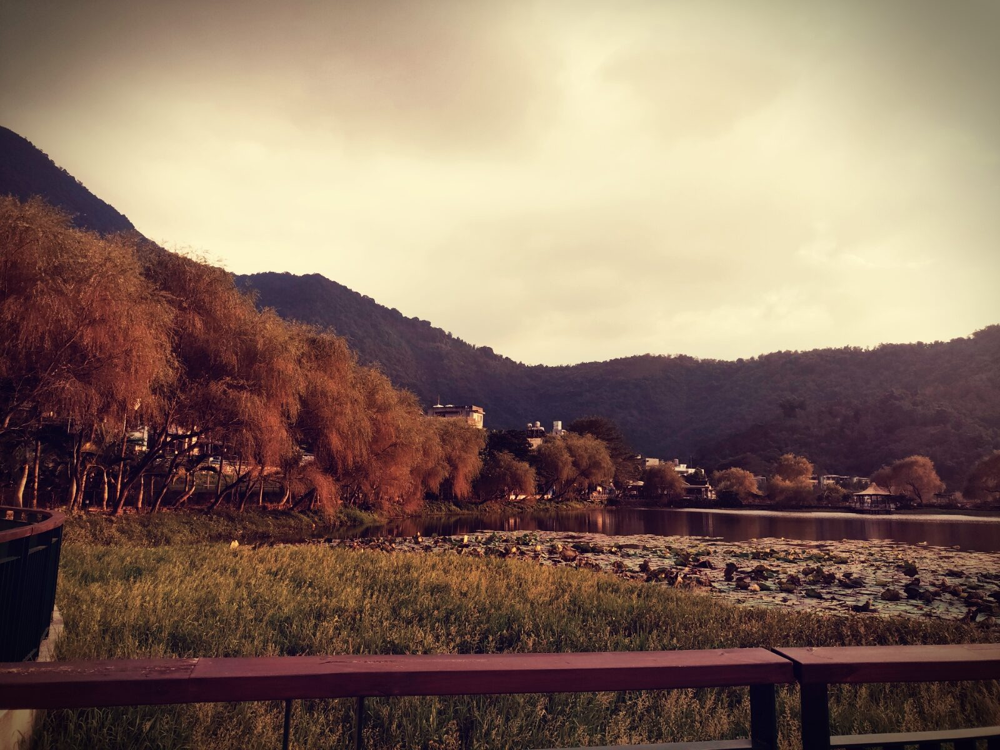
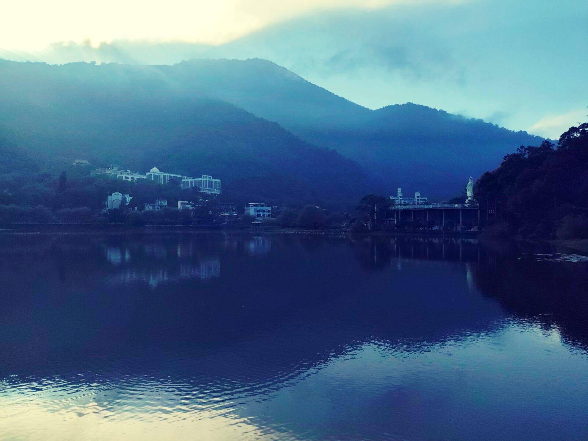
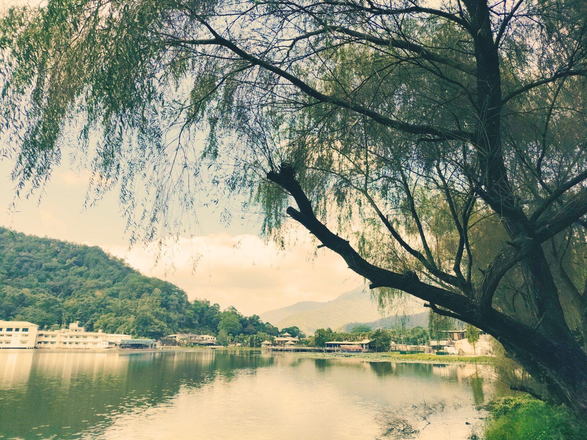

迎著風站在虎頭山觀景平台，心曠神怡。遠方山巒一層一層退去，埔里市區房屋櫛比鱗次，整片盆地鋪在腳下。觀景台旁的斜坡草皮上，飛行傘一個個起飛，像小鳥一樣自由翱翔天際——風聲、傘翼、人影，都變得很輕。

下山到鯉魚潭。八字型的湖四面環山，山腰有寺廟。遊客不多，沿著環湖步道慢慢走，湖面波光閃爍，散佈著荷花；水鳥低飛掠過水面，不時有大魚躍出。相傳潭邊有七個靈氣穴位遍佈各處——不論信不信，空氣確實涼，步調確實慢。


這裡不再像往日的熱鬧，更多的是悠閒放鬆的氛圍。櫻花道、柳堤、松柏，像淡妝秀麗的小西湖。陽光從柳枝縫隙漏下來，湖面被風吹出細紋，時間好像也被拉長了。

隔天清晨再看一次湖。山嵐與光影不斷變化，對岸建築與觀音像倒映在深藍的水面上，雲從山腰慢慢移過去。行雲流水，一點也不趕。

飯店的湖景房就建在湖上。坐在陽台的椅子，喝咖啡、看山，釣魚。對面的山上，山嵐與光影不停變化——時間在這裡，真的變得好慢。
PLACE NOTE / 埔里・虎頭山・鯉魚潭
虎頭山位於南投埔里，觀景平台可俯瞰埔里盆地，亦為飛行傘起飛點之一。鯉魚潭在埔里東南側，有環湖步道、柳堤與湖畔住宿；季節與人潮變化大，平日較為清靜。路況與開放請以現場為準。
文章與照片為本次旅行的個人記錄。